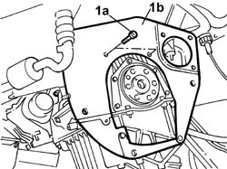
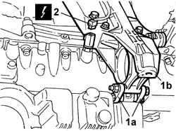
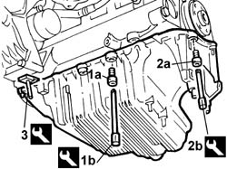

1020A20 CRANKCASE SUMP - R.R. clean contact surfaces and apply sealant
- Path
- Procedures > 10 ENGINE > 1020 CRANKCASE SUMP AND COVERS > 1020A CRANKCASE OIL SUMP > 1020A20 CRANKCASE SUMP - R.R. clean contact surfaces and apply sealant
- Kind
- repair procedure (removal / refitting; the operation number is the code)
- Applies to
- engines: 2.4 JTD 10V; all production periods
- Interactive page
- https://sloeber94.github.io/elrnDB-lThss/en/#/75569
Applies to: all engines; all production periods
 Removing
Removing
 Refitting
Refitting- Proceed with the removal of the front suspension frame without dismantling the components fitted to it at the bench.
See in Op. 4410D10 Front suspension FRAME - R.R.
See in Op. 1076B50
See in Op. 2110A10 MANUAL GEARBOX and differential - R.R.
See in Op. 1810A24 CLUTCH - R.R. with gearbox removed
See in Op. 1024B22
See in Op. 1084A16
- Undo the engine oil plug on the sump and drain the engine oil into a suitable container.
- Tighten the oil sump engine oil drain plug.
1. Undo the fixing bolts (1a) and remove the engine flywheel guard (1b).

Applies to: all engines; all production periods
1. Undo the bolts (1a) fixing the intermediate shaft/rear power unit support (1b) to the engine oil sump.
2. Disconnect the electrical connection for the engine oil level sensor.
 | Description | Connector |
|---|---|---|
2 | Engine oil level sensor | K032 |

Applies to: all engines; all production periods
1. Undo the front and rear bolts (1b) fixing the crankcase sump using the spanners (1b).
 | Description | Code | Function |
|---|---|---|---|
1b | Spanner | 1.860.834.000 | - |
2. Undo the side bolts (2a) fixing the crankcase sump using the spanner (2b).
| Description | Code | Function |
|---|---|---|---|
2b | Spanner | 1.860.833.000 | - |
3. Cut the oil sump sealant using the special tool.
| Description | Code | Function |
|---|---|---|---|
3 | Blade | 1.870.718.000 | Cutting engine oil sump sealant |
- Remove the crankcase sump.

Applies to: all engines; all production periods
Refitting
Removing- Clean the matching surfaces between the crankcase sump and the cylinder block/crankcase.
- Apply silicon sealant to the entire perimeter of the crankcase sump.
- Position the crankcase sump in its housing with no axial deviation
- Using the special spanner, tighten the side bolts fixing the engine oil sump to the recommended torque.
| Description | Code | Function |
|---|---|---|---|
. | Spanner | 1.860.833.000 | - |
 | Value - daNm | Fastening | Component | Ø |
|---|---|---|---|---|
. | (side bolt) 0.9 | Bolt | OIL SUMP | M6 |
- Using the special spanner, tighten the front and rear bolts fixing the engine oil sump to the recommended torque.
| Description | Code | Function |
|---|---|---|---|
. | Spanner | 1.860.834.000 | - |
| Value - daNm | Fastening | Component | Ø |
|---|---|---|---|---|
. | 2.5 (engine crankcase side) | Front and rear bolts | OIL SUMP | M8 |
- Connect the electrical connection for the engine oil level sensor.
| Description | Connector |
|---|---|---|
. | Engine oil level sensor | K032 |
- Tighten the bolts fixing the intermediate shaft/rear power unit support to the recommended torque.
| Value - daNm | Fastening | Component | Ø |
|---|---|---|---|---|
. | 2.5 | Bolt | RIGID REAR SUPPORT POWER UNIT | M8 |
- Fit the flywheel guard and tighten the fixing bolt.
See in Op. 1084A16
See in Op. 1024B22
See in Op. 1820A24 Thrust bearing LINKAGE - R.R.
See in Op. 2110A10 MANUAL GEARBOX and differential - R.R.
See in Op. 1076B50
See in Op. 4410D10 Front suspension FRAME - R.R.
See in Op. 0010T11 ENGINE OIL - Check level and top up if necessary
- [0010T11]